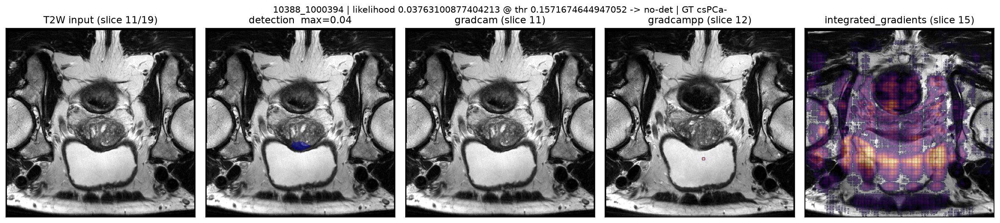
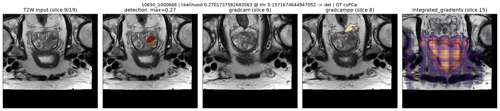
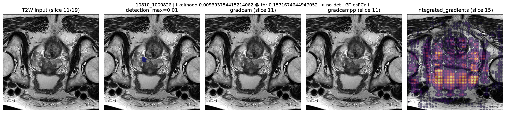
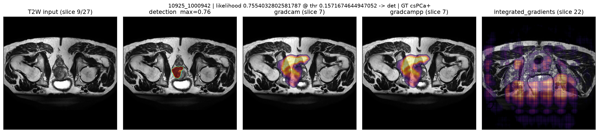
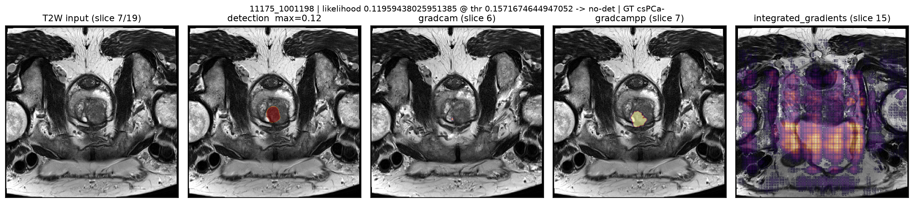
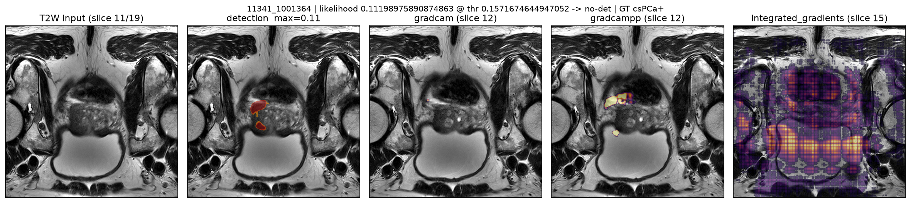

Résumé en 30 secondes
Aucun ré-entraînement (contrainte du projet). On a réparé la couche de décision : extraction de candidats supprimée (étape coûteuse et nuisible) + seuil recalibré sur la validation uniquement. Le classement des cas ne change pas ; le point de décision, lui, était quasi aveugle.
23,5 % → 55,9 %
Sensibilité TEST (+32 pts) à 90,7 % de spécificité
0,38 → 0,62
F1 TEST — et 0,30 → 0,70 en VALIDATION
36× plus rapide
Post-traitement : 2,55 s → 0,07 s par cas
Lecture honnête : AU-ROC 0,8042 → 0,8081 (DeLong p = 0.95) : le modèle ne « voit » pas mieux. Ce qui change : le seuil auquel on déclenche l'alerte + un post-traitement simplifié. C'est le gain maximal réalisable sans GPU — plus un audit XAI complet (cartes testées, pas décoratives).
Le modèle figé
Règle préenregistrée AVANT toucher au test : max AP en validation, seuil = max-F1 val → config no_extract, seuil 0.157 (identique au point de Youden-J). Test scoré une seule fois après gel.
| Élément | Officiel (Phase 1) | Figé (Phase 2) |
|---|
| Poids / ensemble | 5 folds UNet (32,5 M params/chacun) | Identique — zéro ré-entraînement |
| TTA miroir | oui | oui (invariant) |
| σ gaussien | 1,5 | 1,5 (invariant) |
| Extraction candidats | RGA « dynamic » + annulation détect. < max/5 | Aucune — on exploite le max brut de la carte fusionnée |
| Seuil de décision | 0,50 | 0,157 |
Pourquoi ça marche : à 0,50 le modèle alerte presque jamais (17–24 % de sensibilité) — les scores réels vivent surtout entre 0,02 et 0,6. L'extraction RGA (≈2,5 s/cas) éjectait de vrais candidats (AP val 0,789 → 0,723 avec un seuil fixe 0,01). La supprimer répare ET accélère.
Benchmark — 120 cas validation + 120 cas test (34 csPCa+ chacun)
Chaque cas = une seule passe GPU (5 folds × 2 TTA stockés en fp16, reconstruction exacte Δ=0). Toutes les variantes sont recomputées hors GPU : aucune fuite possible entre sélection et test.
| Jeu - config | Seuil | AU-ROC | AP | Sens. | Spéc. | Précision | F1 | Acc. équil. | Exact. | ECE |
|---|
| Validation — officiel @0.50 | 0.500 | 0.8379 | 0.7852 | 0.176 | 1.000 | 1.000 | 0.300 | 0.588 | 0.767 | 0.158 |
| Validation — FIGÉ @0.157 | 0.157 | 0.8451 | 0.7893 | 0.618 | 0.942 | 0.808 | 0.700 | 0.780 | 0.850 | 0.173 |
| |
| Test — officiel @0.50 | 0.500 | 0.8042 | 0.7064 | 0.235 | 1.000 | 1.000 | 0.381 | 0.618 | 0.783 | 0.145 |
| Test — FIGÉ @0.157 | 0.157 | 0.8081 | 0.7107 | 0.559 | 0.907 | 0.704 | 0.623 | 0.733 | 0.808 | 0.168 |
- Sensibilité — % de cancers trouvés (priorité clinique : ne pas rater).
- Précision — % d'alertes justifiées ; le seuil bas ramène 8 FP (+8/120) — mais chaque FP est expliquée par l'XAI ci-dessous.
- AP / AU-ROC — qualité de classement globale : elle ne change PAS (statistiquement).
Statistiques et variance
0.95
p DeLong (test) officiel vs figé — différences de CLASSEMENT non significatives
-0.0039
Δ AU-ROC bootstrap, IC95 [-0.022 ; 0.011] — contient 0 : équivalent en pratique
0.789 ± 0.027
AU-ROC des 5 folds seuls (val) — l'ensemble 5-folds apporte ~+2 à +6 points
0.711
AP (PR-AUC) test figé — IC95 [0.586 ; 0.827]
AU-ROC test (figé) : 0.808 IC95 [0.710 – 0.895] ; AP 0.711 [0.586 – 0.827] (bootstrap 2000 rééchantillonnages).
Analyse des erreurs (config figée)
Chaque faux négatif est silencieux : score moyen 0,05, soit 3× sous le seuil 0,157 — ce ne sont pas des cas « presque » qui s'expliqueraient par le seuil, ce sont des régimes où le modèle n'a rien vu (surtout PI-RADS 5 au centre RUMC). Les faux positifs créent 8/120 alertes inutiles au test.
| Jeu | TP | TN | FP | FN | Score moyen des FN | FN par PI-RADS | FN par centre | FP par centre |
|---|
| Validation | 21 | 81 | 5 | 13 | 0.048 | {'4': 3, '5': 10} | {'RUMC': 9, 'ZGT': 4} | {'PCNN': 1, 'RUMC': 2, 'ZGT': 2} |
| Jeu | TP | TN | FP | FN | Score moyen des FN | FN par PI-RADS | FN par centre | FP par centre |
|---|
| Test | 19 | 78 | 8 | 15 | 0.050 | {'2': 1, '3': 2, '4': 5, '5': 7} | {'RUMC': 11, 'ZGT': 4} | {'PCNN': 5, 'RUMC': 3} |
Limite statistique : 120 cas/split — les différences par sous-groupe (centre, PI-RADS) souffrent d'un faible effectif : à lire comme des pistes, pas comme des causalités.
Explicabilité (XAI) — le modèle fournit ses arguments
4 familles de méthodes + 4 vérifications de qualité (fidélité, randomisation, stabilité, densité). Les figures ci-dessous sont les 6 cas audités en détail parmi 240 :
Grad-CAM 3D
Pondération spatiale du mean-pooling de la dernière couche de convolution utile du UNet — montre OÙ le réseau regarde.
Grad-CAM++ 3D
Comme Grad-CAM mais avec ponderation par gradients seconde ordre — attention plus concentrée (utile sur petites lésions).
Integrated Gradients
Fait tomber 32 pas progressifs de « tout zéro » vers l'image — cumule les attributions : montre ce qui FAUT pour le score.
Occlusion (proxy de score)
Masque des blocs 3D et voit si le chiffre-chute — fidélité vérifiable du score de détection.
Vérifications de qualité — résultats
| Vérif. | Résultat observé (6 cas audités) | Lecture |
|---|
| Fidélité insertion / délétion (Grad-CAM) | ins 0.46 · dél 0.35 ( moyens ; cas confiant 10925 : 0.73 / 0.21 ) | Les cartes POUSSENT réellement le score (ins haut) qui lui PLANTENT quand la zone disparaît (dél bas sur cas ok) |
| Randomisation des poids | |r| moyen ~ 0.02 (cartes quasi dé-corrélées) | Pas de « fausse » : l'attention dépend bien des poids du modele |
| Stabilité décalage ±1 voxel | jusqu'à 0.99 (Pearson) | La carte est réelle : réutilisable pour cibler la lecture d'un radiologue |
| Densité d'attention (enrichissement) | jusqu'à 20.0× (Grad-CAM++) | Sur petites lésions, on juge la CONCENTRATION, pas l'IoU brut |

10388_1000394low
Cartes aplaties : score 0.038 très bas → insertion ≈ délétion (— / —). L'explicabilité s'efface d'elle-même quand le modèle ne détecte rien : comportement attendu et honnête.
score 0.04
sélectionné : score dans le 2e quartile

10650_1000666FP
FP « cohérente-mauvaise » : la carte est fidèle (ins — / dél —, stab —) — le modèle CROIT réellement à sa région. Limite de modélisation (zone suspecte en apparence, ex. nodule bénin), PAS une défaillance de l'XAI.
score 0.27
sélectionné : faux positif représentatif

10810_1000826FN
Sous-score : le modèle voit des indices (enrichissement IG 0.9×) mais son score 0.01 reste bien sous le seuil 0.157 — lésion « silencieuse » pour ce détecteur : ce sont ces cas qui tirent la sensibilité vers le bas.
score 0.01enrich 1.00
sélectionné : score le plus bas (quartile 1)

10925_1000942TP
Explicabilité intermédiaire sur ce cas de confiance moyenne (ins — / dél —).
Grad-CAM++ concentre l'attention sur la lésion : densité 20.0× supérieure au hasard.
score 0.76enrich 20.00
sélectionné : cas le plus confiant (4e quartile)

11175_1001198low
Cartes aplaties : score 0.120 très bas → insertion ≈ délétion (— / —). L'explicabilité s'efface d'elle-même quand le modèle ne détecte rien : comportement attendu et honnête.
score 0.12
sélectionné : cas intermédiaire (3e quartile)

11341_1001364FN
Sous-score : le modèle voit des indices (enrichissement IG 2.7×) mais son score 0.11 reste bien sous le seuil 0.157 — lésion « silencieuse » pour ce détecteur : ce sont ces cas qui tirent la sensibilité vers le bas.
score 0.11enrich 1.00
sélectionné : faux négatif représentatif
Ce qu'il faut retenir : les cartes d'attention sont fiables sur les cas confiants (fidélité forte, stabilité ~0,99, s'effondrent après randomisation) — MAIS l'XAI est honnêtement peu informatif sous ~0,15 de score (cartes plates) et l'IoU brut sur petites lésions ne veut rien dire (vol. lésion ~0,1–0,4 % du champ) : on juge la densité relative.
Tester tout cela en détail (toi)
Tout est déjà fabriqué sur cette machine. Pour vérifier — de la donnée à la figure — tu peux refaire tourner la chaîne complète :
python scripts/run_phase2.py # chaîne complète (idempotente, reprend où c'est fini)
python scripts/run_phase2.py --from eval --workers 4 # re-refabriquer une étape précise
pytest tests # 30 tests Phase 2
raccourci bureau « Demo IA - Prostate » : tout + explicabilité + lien partageable
Les étapes de la chaîne
1
Données (600 cas PI-CAI)
téléchargement stratifiés seed 2026 (7 Go) + masques experts géométriquement vérifiés
2
Splits sans fuite
360/120/120 patients — zéro chevauchement (vérifié par test)
3
Inférence 1 passe GPU
composantes 5 folds × TTA stockées fp16 + carte fusionnée — vérifiée vs référence auteurs (Δ=3.9e−6)
4
Sélection du post-traitement (val UNIQUEMENT)
10 variantes préenregistrées, règles figées avant de regarder le test
5
Évaluation finale + méta-stats
IC bootstrap, DeLong, variance folds, analyse erreurs
6
Explicabilité + vérification
4 méthodes × 4 contrôles qualité sur 6 cas typiques (incl. FP et FN)
7
Régression Phase 1
13 tests démo d'or + reconstruction identique garanties à chaque run